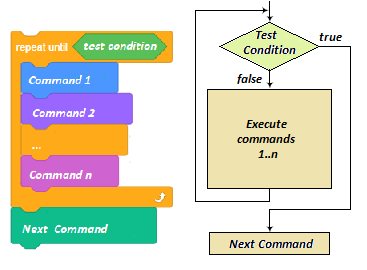
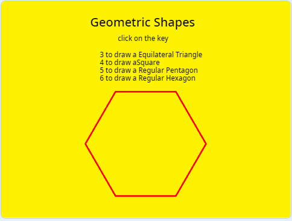
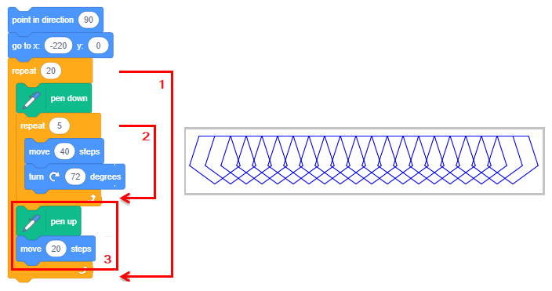
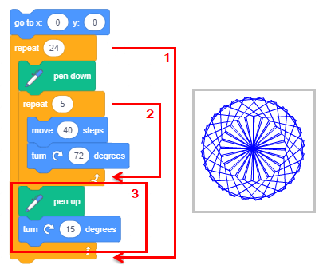
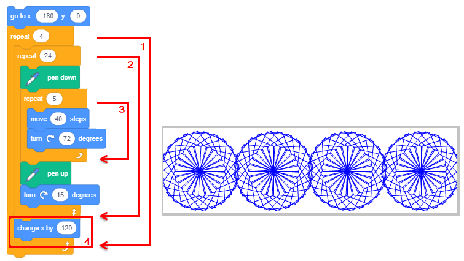
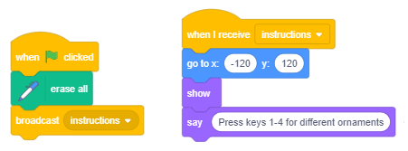
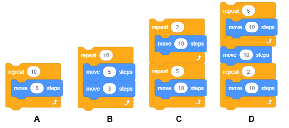
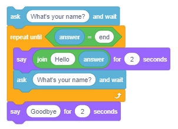

Повтарящи се стъпки¶

- В примери за рисуване на редове от предишния урок използвахме командите за повторение, за да накараме спрайтовете, движейки се с молив надолу, да нарисуваме това, което искахме, с по-малко писане.
Например, вместо да добавим 400 команди, за да нарисуваме пунктирана линия, която е дълга 400 пиксела, добавихме само пет: четири, които повтарят шаблон, и петата, която определя броя на необходимите повторения.
В този урок ще свържем командите за повторение с движението и изглежда командите, така че можем да създаваме различни анимации. В допълнение ще въведем команда, която ви позволява да въвеждате входни данни и блокове, които съхраняват стойностите на логическите изрази.
Блокове, които позволяват повторение
Един от най-простите примери за команди за повторение е командата за описанието на така наречения „вечен цикъл“. Повтарящите се команди съставят тялото на цикъла. Изпълнението им може да бъде спряно само чрез спиране на програмата.

Например, ако искате да постигнете илюзия, че котката ходи, балерината танцува, а пеперудата лети, всичко, което трябва да направите, е да добавите към тях сценарий, който повтаря блоковете и във вечен цикъл.
Разбира се, спрайта трябва да има поне два костюма, а периодът на изчакване трябва да бъде кратък, например 2 десети от секундата (0,2). Командата изчакване между промените в костюма е необходима, за да можем да наблюдаваме промяната във външния вид. Човешкото око не е в състояние да регистрира промени със скоростта, която компютърът прави. Ето защо ние „прекъсваме“ външния вид на костюма с помощта на командата чакане, докато окото ни регистрира предишното изображение.
В примерите, представени в предишния урок, използвахме т. нар. „повтарящи се цикли “. Това са цикли, за които предварително знаем колко пъти ще се изпълни тялото на цикъла.

В Скрач също има команда за описание на цикъл, когато броят на повторенията не е известен предварително, но зависи от това дали е изпълнено условието за излизане от цикъла.
Условието за пропускане на командите на тялото на цикъла (условието за излизане) се проверява в началото на всеки цикъл, така че има възможност цикълът да не бъде изпълнен дори веднъж, ако се установи, че условието е изпълнено по време на първата проверите. Може също така да се случи, че цикълът ще продължи да работи безкрайно, ако условието за излизане от цикъла никога не е изпълнено.
 Изучете следните примери¶
Изучете следните примери¶

Видяхме, че сцената е широка 480 пиксела, висока 360 пиксела и че всяко място на сцената може да бъде достъпно, като се използват нейните координати. В следващите примери ще създадем изображения чрез щамповане на нашите спрайтове на конкретни места. Разбира се, можем да нарисуваме собствените си спрайтови форми, като използваме редактора на бои - например червен кръг или син квадрат, но тъй като искаме изображенията да са възможно най-привлекателни, ще използваме спрайт звезда - жълта звезда от библиотеката на спрайтите.
За да прецизираме изображенията, ще модифицираме звездата леко. Оригиналният размер на звездата е 47х48 пиксела, които можем да видим, ако отидем в раздел Костюми.
Трябва ни размерът на спрайт да е 40х40, по този начин точно 12 звезди се побират в пространството между левия и десния ръб на сцената (480: 40) и точно 9 между горния и долния ръб (360: 40). Освен това искаме спрайтът да е равномерно запълнен с един цвят и да няма контурна линия.

Как редактираме спрайтове
 Използваме инструмент
Използваме инструмент  , за да изберем целия спрайт
, за да изберем целия спрайт
 Махаме контурната линия (настройте дебелината на линията на 0)
Махаме контурната линия (настройте дебелината на линията на 0)
 Избираме вътрешната звезда и я трием
Избираме вътрешната звезда и я трием
 Избираме целия спрайт и задаваме размера на 40х40.
Избираме целия спрайт и задаваме размера на 40х40.
Тази персонализирана звезда ще бъде единственият спрайт, използван в следващите примери.
Следващият пример илюстрира как подреждането на множество контури може да се използва за конструиране на сложни цикли. Също така показва как с помощта на инструментите на вградения редактор на бои във векторен режим може да се използва за редактиране на спрайтове. Самият проект се състои от няколко прости задачи.
Пример 1 - Проект „Звезд蓶

Task 1
Напишете програма, която ще нарисува 4 звезди една до друга, отляво до десния ръб на сцената, всички те трябва да бъдат оцветени по различен начин и размерът им да е 120 пиксела. Рисуването трябва да се извърши с помощта на командата .
Желаният резултат от изпълнената задача може да видите в Image 1.
Резултатът може да бъде постигнат следвайки тези стъпки:
|
|
 променяме цвета на спрайта (използвайки командата за промяна на цветовия ефект),
променяме цвета на спрайта (използвайки командата за промяна на цветовия ефект), оставяме печат,
оставяме печат, преместваме спрайта по ширината му вдясно (120 стъпки),
преместваме спрайта по ширината му вдясно (120 стъпки), променяме цвета на спрайта (използвайки командата за промяна на цветовия ефект),
променяме цвета на спрайта (използвайки командата за промяна на цветовия ефект), оставяме печат,
оставяме печат, преместваме спрайта по ширината му вдясно (120 стъпки),
преместваме спрайта по ширината му вдясно (120 стъпки), променяме цвета на спрайта (използвайки командата за промяна на цветовия ефект),
променяме цвета на спрайта (използвайки командата за промяна на цветовия ефект), оставяме печат.
оставяме печат.{kind=link}
Виждаме, че повторихме стъпките 4-6 три пъти. Можехме да направим същото с по-малко писане, както е показано на следващата фигура.

Блокът  от контролната група ни позволява да подредим необходимия сценарий само веднъж и да зададем колко пъти трябва да се повтори.
от контролната група ни позволява да подредим необходимия сценарий само веднъж и да зададем колко пъти трябва да се повтори.
Този блок е пример за така наречените C-блокове, чиято форма ни напомня на буквата C. Слотът вътре в C-блок приема сценарий като поле за въвеждане. Следователно този блок има две полета за въвеждане: едно за броя повторения, а другото за сценария.

Задача 2
Напишете програма, която ще нарисува 12 звезди една до друга, отляво до десния ръб на сцената, както е показано на изображение 2, размерът на звездите трябва да бъде 40x40.
Тази задача ще бъде подобна на предишната, но не е необходимо да променяме размерите на спрайта. Първо, трябва да поставим нашия спрайт в положение x = -220, y = 0 и след това да го подпечатаме. След това трябва да повторим стъпките 4-6 от предишната задача 11 пъти, с разликата, че бихме преместили спрайта 40 вместо 120 стъпки. Колко време би отнело да напишете тази проста програма, без да използвате командата за повторение?
Решението на задачата е дадено на следната фигура.


Задача 3
Напишете програма, която ще нарисува 15 различно оцветени звезди една върху друга в центъра на сцената, размерът на първата звезда трябва да бъде 320x320 (800% по-голям от оригинала), а всяка след това трябва да бъде по-малка от 50, както е представено на изображение 3.
Въпреки това, когато кажем по-малък с 50, имаме предвид 750%, 700% … по-голям от оригинала (а не 50 пиксела по-малък, или 50% от 800%). За да избегнем смесването на новото изображение с това, направено по време на предишния цикъл, трябва да добавим командата за изтриване на всички в началото.
Решението на задачата е дадено на следната фигура


Задача 4
Напишете програма, която ще нарисува рамка около сцената, съставена от различно оцветени звезди, както се вижда на изображение 4.
Можем да измислим решение, като свържем решения на 4 по-прости проблема.
Рисуване на звезди по горния ръб на сцената отляво надясно.
Рисуване на звезди по десния ръб на сцената отгоре надолу.
Рисуване на звезди по долния ръб на сцената отдясно вляво.
Рисуване на звездите по левия ръб на сцената отдолу нагоре.
Първият проблем беше решен в задача 2. Единственото, което трябва да направите, е да промените стойностите, които определят началната позиция на звездата, вместо у = 0 поставете у = 160. Вторият проблем може лесно да бъде решен чрез промяна на ориентацията на спрайта, вместо да се движи вдясно, той трябва да се движи надолу. Блоковете за преместване, промяна на цвета и щамповане трябва да се повторят 8 пъти. Третият и четвъртият проблем могат да бъдат решени по подобен начин, трябва само да промените ориентацията на спрайта и колко пъти трябва да остави печат. Решението за цялата задача, както и частите, показващи решението за третия и четвъртия проблем, са дадени на фигурата по-долу.

Структурата на решението на тази задача, при която множество цикли са нанизани заедно, се нарича линейна композиция.

Задача 5
Напишете програма, която ще нарисува 4 звезди една до друга, отляво до десния ръб на сцената, размерът на звездата трябва да е 120 пиксела. Всяка звезда трябва да се състои от множество звезди с различни размери и цветове, както звездата от Задача 3.
Резултатът трябва да изглежда като изображение 5.
Решението на тази задача има сложна структура. Ще трябва да вмъкнем цикъла от Задача 3, който печата по-малки звезди отгоре на по-големи, в цикъла, който трябва да се повтори 4 пъти, който рисува големи звезди една до друга, както в Задача 1. Пълното решение е представено в следната фигура.

Структурата на решението на тази задача, при която един цикъл се вмъква в друг, се нарича вложен състав.
Пример 2 - Проект „Геометрични фигур蓶
В този проект ще покажем как можем да рисуваме правилни геометрични фигури - триъгълници, квадратчета, петоъгълници и шестоъгълници.
RОбикновените многоъгълници имат страни, които са равни и вътрешни ъгли, които са равни. Ще нарисуваме полигоните, като започнем от върха в центъра на екрана, като страните са дълги 100 пиксела.
Да започнем с начертаване на квадрат. Ще изпратим молив до центъра на екрана, до позицията (0,0), след това ще сложим молив и ще повторим следните команди 4 пъти: преместете 100 стъпки, завъртете на 90 градуса.
Ако знаем, че сборът на всички външни ъгли на обикновен многоъгълник е 360°(вижте фигурата по-долу), лесно можем да подреждаме командни блокове, които ще нарисуват триъгълници, петоъгълници и шестоъгълници.

Части от сценариите, използвани за рисуване на споменатите многоъгълници, са представени на следната фигура.

Забележка. Можете също да използвате командата завой наляво и да опитате да нарисувате квадрат или шестоъгълник в позицията, представена на снимката по-горе.
Както в предишния пример, кликването върху зеления флаг изтрива всичко, което преди беше на сцената, задава стойности за цвета и размера на молив и дава инструкции как да използвате проекта.
Тъй като искаме да запазим инструкцията на сцената, ние ще създадем фон, на който е написана инструкцията, като използваме вградения редактор на бои. Изгледът на сцената след стартирането на програмата е изобразен на следващата фигура.
{kind=link}
Всеки сценарий, свързан с клавишите 3-6 на клавиатурата, ще изтрие всички направени по-рано следи, ще скрие спрайт и след това ще нарисува съответния многоъгълник.
На следващата фигура можете да видите сценарийите за стартиране на програмата и да нарисувате триъгълник и квадрат.

Надграждане на проекта
Ще надстроим проекта така, че той да очертае геометрична форма, дадена от потребителя с входните данни. В тази версия на проекта параметрите на чертежа се задават чрез кликване върху зеления флаг. Тогава потребителят е помолен да въведе номера на страните на многоъгълника, който иска да нарисува.
Блокът за входни данни  е разположен в групата Sensing-Сетива.
е разположен в групата Sensing-Сетива.
След изпълнение на тази команда, Скрач си спомня какво е сложил потребителят в пространството, наречено отговор  .
.
Очаква се потребителят да въведе едно от числата между 3 и 6, но ако потребителят въведе число, което не е в този интервал, програмата няма да работи правилно и това трябва да бъде предотвратено.
Един от начините за управление на входните данни е повтарянето на въпроса, докато потребителят въведе число от правилния интервал.

След като бъдат получени правилните входни данни, те ще бъдат използвани за изчисляване на броя повторения и ъгъла на завъртане, следователно, и четирите многоълника могат да бъдат очертани с еднакви команди.

Ще използваме части от предишните проекти за следващия ни проект. В него ще покажем как можем да използваме вложената композиция от определен брой цикли, за да нарисуваме ефективни изображения, получени чрез повтарящи се модели. Моделът може да се повтори след определен брой стъпки - по този начин ще получим така наречените фонативни ръбове. Моделите могат да се повтарят след завъртане, за да се създаде ъгъл или след комбинацията от двете движения.
Пример 3 - Проект „Орнамент蓶
Ако повторим цикъла за броене, който рисува редовен петоъгълник от предишния пример няколко пъти, ще нарисуваме орнамент - по-сложно изображение, съставено от петоъгълници. Например, ако нарисуваме 20 такива петоъгълници, движейки се отляво към десния ръб на сцената, ще нарисуваме следната фонативна граница.
{kind=link}
Чертежът на петоъгълника е активиран от цикъла (2), който е поставен във външния контур (1). Външният цикъл се повтаря 20 пъти. Всеки път, когато работи външната верига, се извежда един петоъгълник в текущото положение на молив, след което спрайтът се движи надясно с молив нагоре (3). Спрайтът се движи само на половината от дължината на страната на петоъгълника, поради което петоъгълниците се припокриват.
Ако обаче повторим чертежа на петоъгълниците, докато променяме посоката на спрайта, преди да нарисуваме всеки петоъгълник, така че спрайтът се завърта в пълен кръг, ще получим следния орнамент.
{kind=link}
Тъй като пълен кръг има 360 градуса, а спрайтът се завърта на 15 градуса след всеки петоъгълник (2) с молив нагоре (3), трябва да повторим тази процедура 24 пъти; следователно, външният контур (1) се повтаря 24 пъти. Ако между рисунките спрайтът промени ъгъл и също така се движи 10 стъпки, ще получим малко по-различен орнамент.

Ако повторим втория орнамент 4 пъти, преминавайки отляво към десния ръб на сцената, ще получим изображението по-долу.
{kind=link}
Следователно, начертаването на последната фонативна граница се постига с вложената композиция, която има 3 контура: вътрешният контур очертава един петоъгълник (3), средният контур (2) повтаря чертежа на петоъгълника и завърта спрайта с молив нагоре 24 пъти, а външният контур (1) повтаря чертежа на кръговия орнамент и премества спрайта с молива нагоре за стойността на диаметъра на орнамента.
Този проект ни позволява да нарисуваме всеки от орнаментите, като натискаме един от клавишите 1-4 на клавиатурата. В допълнение към тези 4 сценария има сценарий, който се задейства чрез кликване върху зеления флаг и един, който се задейства с инструкцията за съобщение. Инструкцията за съобщение се излъчва от всеки сценарий в края на процеса на стартиране. Когато спрайтът получи това съобщение, то се появява в горната част на екрана и дава инструкцията за рисуване на орнамента.
{kind=link}
 Разбра ли?¶
Разбра ли?¶
въпрос 1¶
- да
- не
- Вярно.
Q-55: Условието, което ни позволява да излезем от цикъл тяло на цикъла ли се нарича?
Въпрос 2¶
- да
- Вярно.
- не
Q-56: Спирането на програмата ли е единственият начин да спрем изпълнение на вечен цикъл(forever loop)?
Въпрос 3¶
- да
- не
- Вярно.
Q-57: Командата repeat until(повтаряй докато0 колко пъти ще се повтори тялото на цикъла?
Въпрос 4¶
Q-58: Кои от тези вечни контури позволява спрайтът да се движи наляво-надясно и да поглежда надясно, ако преди това бяха изпълнени командите  ,
,  и
и  ? (Изберете всички верни отговори).
? (Изберете всички верни отговори).
{kind=link}
Въпрос 5¶
Q-59: Кой от тези вечни контури позволява спрайтът да се променя постоянно между две позиции: краката нагоре и краката надолу, ако преди това бяха изпълнени , и  ? (Изберете всички верни отговори).
? (Изберете всички верни отговори).
{kind=link}
Въпрос 6¶
Q-60: Кой от тези повтарящи се определен брой пъти цикли позволява на спрайта да направи 80 крачки? (Изберете всички верни отговори).
{kind=link}
Въпрос 7¶
Q-61: Кой от тези повтарящи се определен брой пъти цикли позволява на спрайта да направи 80 крачки? (Изберете всички верни отговори).

Въпрос 8¶
{kind=link}
- Здравей, КРАЙ
- Скрач не прави разлика между малки и големи букви, така че условието за изпълнение на цикъла е изпълнено.
- Как се казваш
- Това е съобщението за начало не за край.
- Довиждане
- Вярно.
Q-62: Какво ще каже спрайтът, ако потребителят отговори на въпроса Как се казваш? с END-КРАЙ?
Въпрос 9¶
- A
- Вярно.
- B
- Това е условието за влизане в цикъла в този стек от команди.
- и двата
- Нещото, което е условието за излизане от цикъла в (A), е в същото време условието за влизане в цикъла в (B).
- никой
- Стекът (А) позволява спрайтът да каже Hello при даденото условие.
Q-63: Кой от тези стекове ще позволи на спрайта да каже Hello, ако потребителят въведе стойността 0?

- нито веднъж
- Условието за излизане от цикъла не беше изпълнено за първите 3 отговора.
- 2 пъти
- Условието за излизане от цикъла не беше изпълнено и за номер 3.
- 3 пъти
- Вярно.
- 4 пъти
- Когато условието за излизане от цикъла е изпълнено, командите от тялото на цикъла не се изпълняват.
Q-64: Колко пъти ще се изпълни тялото на цикъла (А), ако потребителят въведе отговорите на въпроса в следния ред: 1, 2, 3, 0.
Въпрос 10¶

- Вярно.
- Например, ще приеме 7 за правилно.
- Наприемр, няма да приеме 3.
Q-65: Коя буква отбелязва условието, което ще позволи проверката на въведените данни да е правилна?
 Опитай!¶
Опитай!¶
Упражнение 1¶
Отворено колие. Създайте проект, който показва низ от кръгове с различен цвят и размер, започвайки от левия ръб на сцената.

Instruction:
Изображението се постига чрез промяна на цвета на писалката и поставянето й надолу, размерът на писалката трябва да бъде 80, спрайтът, който я държи, трябва да бъде скрит, а изходната му позиция трябва да бъде (-200,0). Цикълът трябва да се повтори 5 пъти и в него спрайтът трябва да се движи на 80 стъпки с писалката нагоре и да увеличи броя на цвета на писалката с 30, след което да сложи писалката надолу. Началната стойност на цвета на писалката трябва да бъде 0. Трябва да организирате изтриването на предишния чертеж, когато щракнете върху зеления флаг.
Упражнение 2¶
Затворено колие. Създайте проект, който рисува затворена последователност от 12 кръга с различен цвят. Размерът на молив трябва да бъде 50.

Instruction:
Изображението се постига чрез промяна на цвета на писалката и поставянето й надолу, размерът на писалката трябва да бъде 50, спрайтът, който я държи, трябва да бъде скрит, а изходната му позиция трябва да бъде (-50,50). Цикълът трябва да се повтори 12 пъти и в него спрайтът трябва да се движи 50 стъпки с писалката нагоре, да се завърти на 30 градуса и да се увеличи числото на цвета на писалката с 15 и след това да се остави писалката, за да остави отпечатък. Началната стойност на цвета на писалката трябва да бъде 0. Трябва да организирате изтриването на предишния чертеж, когато щракнете върху зеления флаг.
Упражнение 3¶
Серия от кръгове. Създайте проект, който показва серия от кръгове с различен цвят и размер, като се започне от левия ръб на сцената.

Instruction:
Изображението се постига чрез промяна на размера и цвета на писалката и поставянето й надолу, спрайтът, който държи писалката, трябва да бъде скрит, а изходната му позиция трябва да бъде (-200,0). Началната стойност за цвета на писалката трябва да бъде 0, а за размера на писалката 80. Цикълът трябва да се повтори 5 пъти, а в него броят на цвета на писалката трябва да се увеличи с 30, а размерът на писалката трябва да се намали с 10. Спрайтът трябва да се движи на 80 стъпки вдясно, с писалката нагоре, разбира се. Командата * изчакване * също трябва да се добави към цикъла, така че можете да следвате процеса по-лесно. Трябва да организирате изтриването на предишния чертеж при щракване върху зеления флаг.
Упражнение 4¶
Концентрични кръгове. Създайте проект, който показва серия от концентрични кръгове с различни цветове в центъра на сцената.

Instruction:
Изображението се постига с промяна на размера и цвета на писалката и поставянето й надолу, спрайтът, който я държи, трябва да бъде скрит и да бъде поставен в центъра на сцената. Цикълът трябва да се повтори 8 пъти и в него броят на цвета на писалката трябва да се увеличи с 25, а размерът на писалката да се намали с 30. Началната стойност за цвета на писалката трябва да бъде 0 (червена), а за размер 240 (най-големият размер). Командата * изчакване * също трябва да се добави към цикъла, така че можете да следвате процеса по-лесно. Писалката трябва да се спуска след всяка промяна. Трябва да сте осигурили изтриването на предишния чертеж при щракване върху зеления флаг.
 Отстранете грешката!¶
Отстранете грешката!¶
Грешка 1¶
Ученикът искаше спрайтът да се разхожда между левия и десния ръб на сцената. Ето защо той / тя добави постоянната смяна на костюма и се движи с 10 стъпки до достигане на ръба, когато спрайт се завърти. Ученикът обаче не харесва факта, че спрайтът върви с главата надолу към левия ръб на сцената. Какво трябва да се направи, за да се поправи тази грешка?

Answer:
Това може да бъде добавено като добавите блока към скрипта на спрайта.
Грешка 2¶
Ученикът искаше своя спрайт-пеперуда, който има два костюма - един с повдигнати и един със спуснати крила, да се плъзга, размахвайки крилата си между две произволни позиции. Програмата му обаче не позволи това. Пеперудата се плъзна между две позиции, но крилата му бяха или спуснати, или повдигнати. Къде се обърка ученикът?

Answer:
Два скиппта, който стартират едновременно е трябвало да бъдат създадени.

 Обобщение¶
Обобщение¶
В този урок ние покрихме команди за повторение. С примери за различни проекти илюстрирахме как да използваме всеки от трите типа контури: вечен цикъл, броящ цикъл - където предварително знаем броя повторения и цикъл на условие - където шаблон ще се повтаря, докато определено условие има е изпълнено. Показахме също, че два или повече цикъла могат да бъдат комбинирани, за да се изпълняват един след друг (линеен състав), или един може да бъде поставена в другият (внедрен състав). Освен това научихме как да използваме командата за въвеждане на данни.
Scratch проекти: 5Studio
Нови концепции: цикъл, тяло на цикъла, условие за излизане, вечен цикъл, броящ цикъл, цикъл с условие, линеен състав на цикъла, вложен цикъл на състав, команда за въвеждане на данни.
Scratch команди:  - , ,
- , ,  ; - ;
; - ;
 - , ;
- , ;  -
-  ,
,  ,
,  .
.
 Създаване на проекти¶
Създаване на проекти¶
Проект 1 - „Шестоъгълниꓶ
Създайте проект, който ще нарисува шестоъгълник; дължината на страните трябва да се генерира на случаен принцип от интервала [100,200].
Проект 2 - „Квадрат蓶
Създайте проект, който предлага да нарисувате квадрат, чиито страни са успоредни на координатните оси, или да оформите ъгъл 45 о с координатните оси. Изборът трябва да се извърши с клавиш 1 или 2 на клавиатурата. Инструкцията как да използвате програмата трябва да бъде написана на фона на сцената, като в пример 2. Дължината на страната трябва да е 100 пиксела.
Проект 3 - „Триъгълниц蓶
Напишете проект, който предлага да нарисувате следните видове триъгълници:
а) равностранен, b) равнобедрен, c) прав, d) остър, e) тъп.
Проектът трябва да има инструкция, която показва кой ключ задейства чертежа на кой тип триъгълник.
Планирайте координатите за всеки триъгълник и след това нарисувайте страните с командата плъзни.
Проект 4 - „Четириъгълниц蓶
Напишете проект, който предлага да нарисувате следните видове четириъгълници:
квадрат,
правоъгълник,
ромб,
успоредник,
трапец.
Планирайте чертежа, така че всички четириъгълници, споменати по-горе, са изчертани на сцената в края на процеса на изпълнение.
Инструкцията за използване на програмата трябва да се появи на сцената при кликване върху зеления флаг.
Събитията, които задействат рисуването на определени видове четириъгълници, трябва да бъдат свързани с клавиши по ваш избор.
Забележка. „Четириъгълници“ са разработени в учебната програма по математика за шести клас.